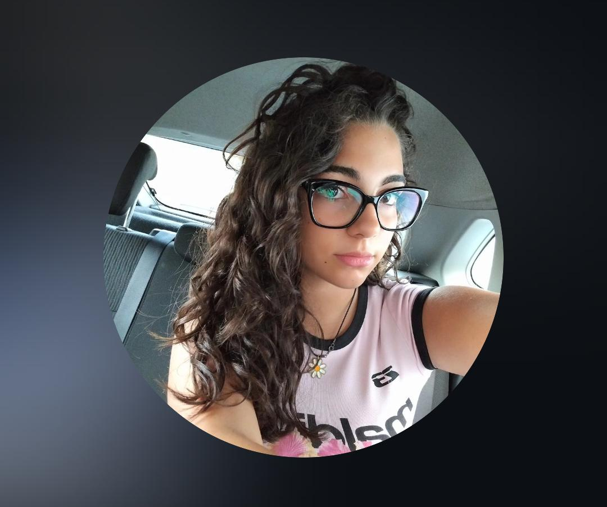
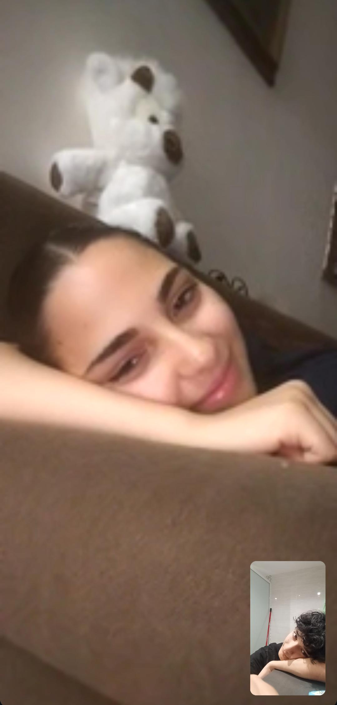
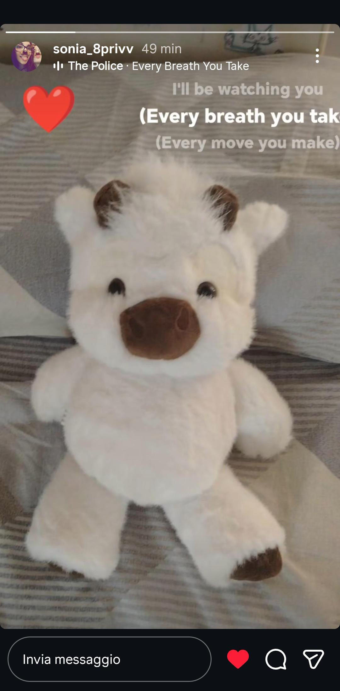
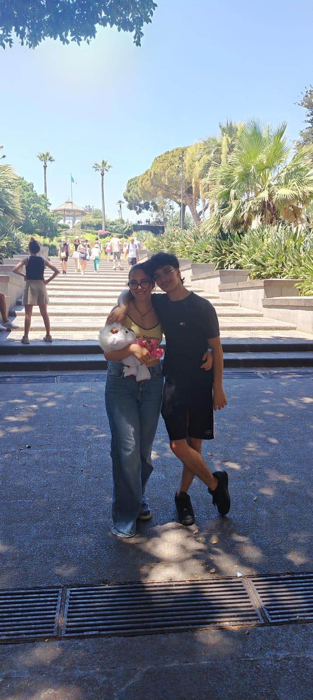
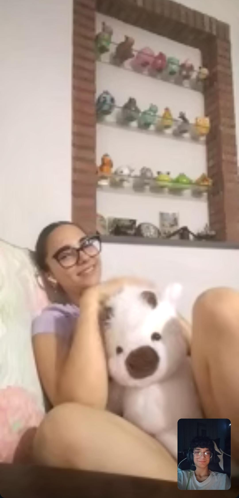
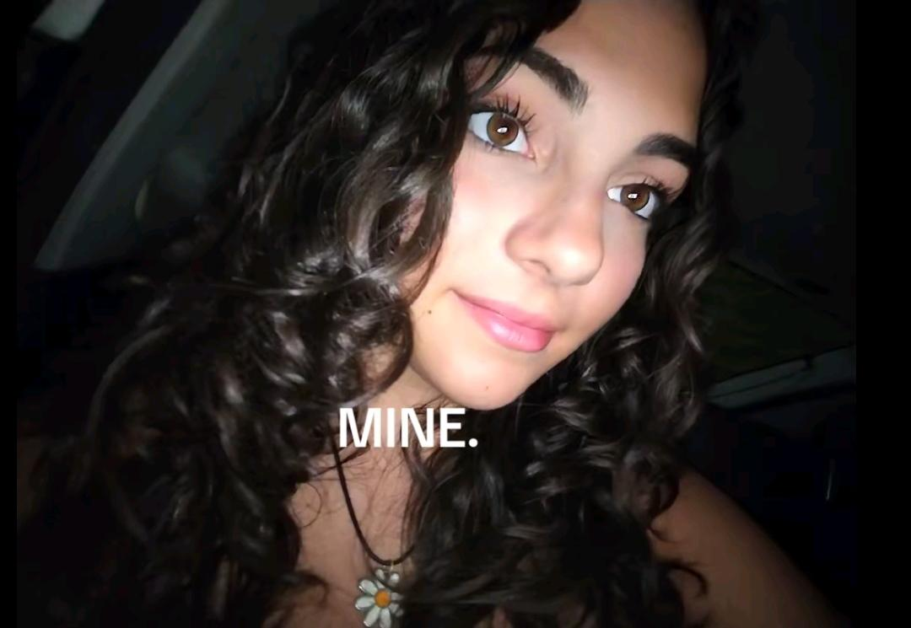

Ogni momento lontano da te è difficile, perché mi manchi da morire.

Sei semplicemente illegale in questa foto... una vera dea! 😍😏

E poi mi guardi così e mi fai sciogliere... sei la cosa più dolce del mondo 😍

Il nostro Johnnyyy! La mucca degli altopiani più coccolosa e guardiana del nostro amore 😍

La nostra prima uscitaaa... il giorno in cui ho capito di aver fatto bingo. Belli veri 😍😏

Le nostre infinite videochiamate, che mi salvano le giornate quando non posso stringerti 😍

Letteralmente una turbofregna allucinante. Quegli occhi mi ipnotizzano... tutta mia 😏😍